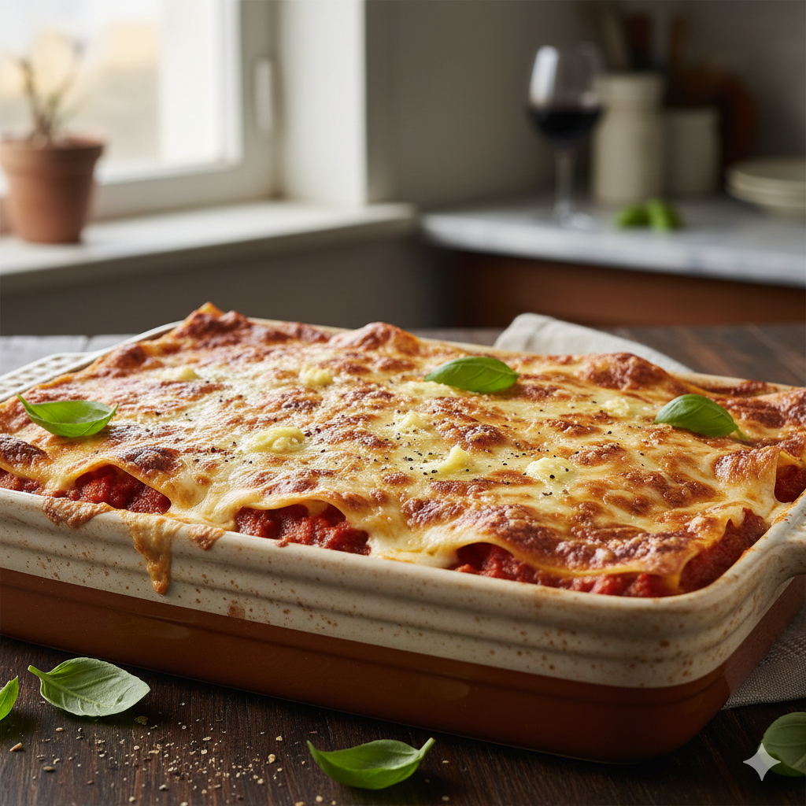

Lasagne ist ein echter Klassiker aus Norditalien.
Das Gericht besteht aus mehreren Schichten breiter Nudeln, einer
herzhaften Fleischsauce (Ragú)
und einer cremigen Béchamelsauce. Im Ofen verschmelzen diese
Schichten zu einer saftigen Mahlzeit,
die oben mit einer knusprig gebackenen Käseschicht abschließt.
Sie gilt weltweit als Inbegriff für herzhaftes, hausgemachtes Essen.
Ein Wok zeichnet sich durch seine hohe, gewölbte Form aus, die extremes Erhitzen und ständiges Rühren („Stir-Fry“) ermöglicht, wodurch Gemüse knackig und Fleisch saftig bleibt. Im Gegensatz dazu bietet die flache Pfanne eine größere Kontaktfläche zum Boden, was ideal für gleichmäßiges Anbraten bei mittlerer Hitze oder das Garen von flachen Stücken wie Steaks und Pfannkuchen ist. Während der Wok eine dynamische, schnelle Küche mit wenig Fett fördert, punktet die Pfanne durch ihre Vielseitigkeit bei klassischen westlichen Gerichten und Schmorstufen. Fazit: Der Wok ist der Spezialist für schnelles, gesundes Garen bei hoher Hitze, während die Pfanne der unverzichtbare Allrounder für präzises Braten im Alltag bleibt.